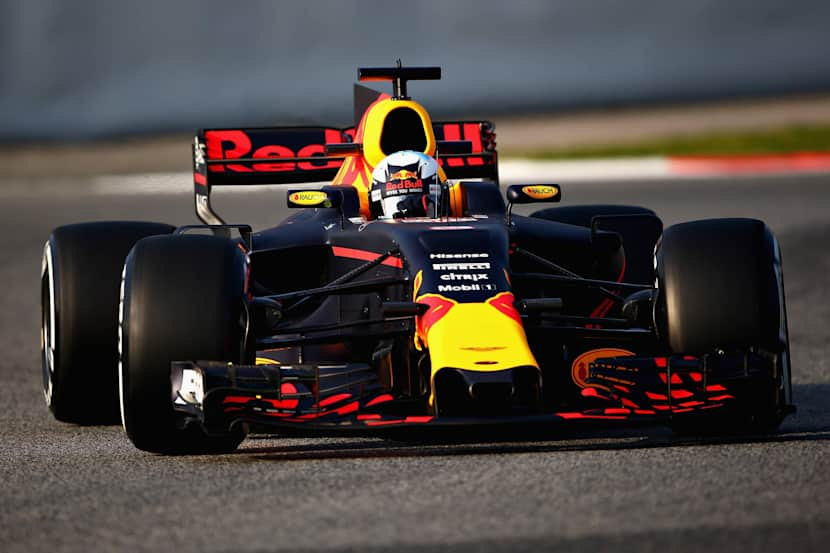
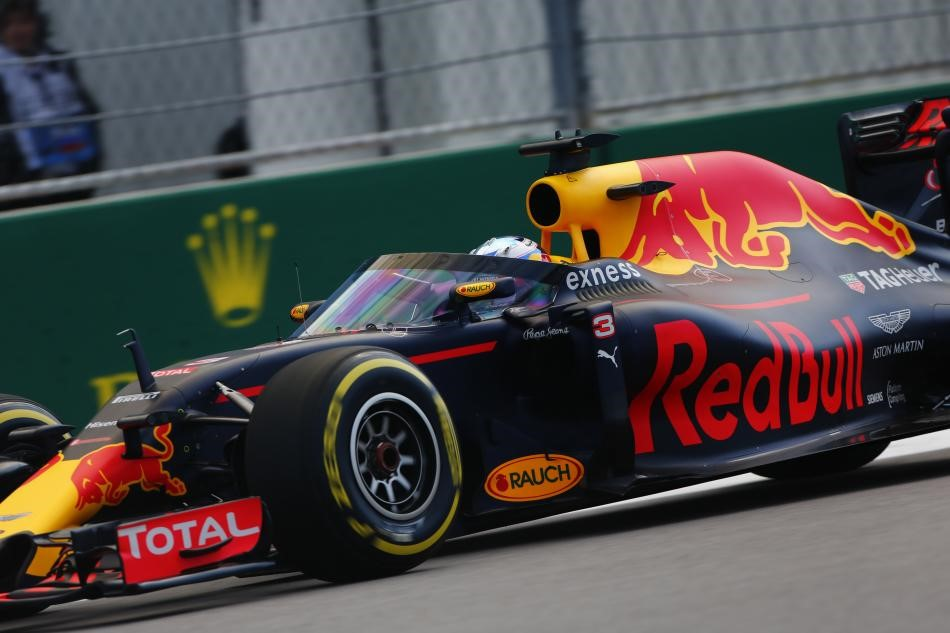
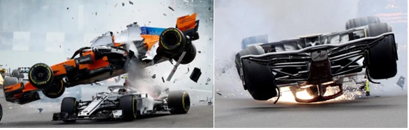

I’ve decided to approach a widely talked about subject in F1, which at first was extremely surrounded by controversy. While the halo has now become an important part in the way a Formula 1 car is built, it hasn’t always been the case. Older F1 fans can remember the way those cars looked before and also, the way they’ve changed. Today, we’ll take a look at the halo, why it’s made its appearance and how it affected the cars, but also the drivers as well.
Photograph: Red Bull
The halo appeared out of pure necessity. The FIA had been looking for years for some type of protection to make sure they increased driver safety, but it was only in 2018 that the halo was introduced. Since then, the halo was made mandatory not only in F1, but also in support series like Formula 2, Formula 3, Formula E and others. Unlike other car parts, the halo wasn’t created by any of the F1 teams, but by the FIA itself.
It was a real challenge for teams to be able to incorporate such a piece in their cars. No one wanted it at first, because F1 had been always running in that way: neither teams, nor drivers wanted it. It added additional weight to the car, making it difficult for teams to stay within the weight rules, and it restricted drivers’ view. What is more, people hated it for its aesthetics. However, despite everyone’s protests, it was still added on the cars.
Let’s kick it off from the start and go to talk about the roll structure. This mostly consists of the roll hoop, which is the primary piece, and the halo, that is the secondary roll structure. Both of these components are vital for the drivers’ safety, but we’ll focus on the halo today. The FIA’s rules clearly state that both of these structures need to be high enough to cover the drivers’ helmet and his steering wheel when a line is drawn between the structures’ highest points. The halo is made from titanium and weighs about 7 kg. Although, there is a main structure set by the FIA that all teams have to respect, they are allowed to make these halos their own and under certain restrictions they can add alterations to make them more aerodynamic. F1 claims that it can withstand about 12.000 kg equivalent to the very well-known London double-decker bus.
Even though you can now find the halo on all cars, it wasn’t the first development that had the same purpose. Red Bull tried to build a type of windscreen that got named “aeroscreen”. However, it didn’t really last long as the FIA didn’t give it attention and it wasn’t strong enough. It does look pretty similar to the Indycar design that is used now, which kind of combined the halo and this aeroscreen.
Despite how judged the halo was at first, it saved a lot of drivers’ lives. Some really good F1 examples could be Charles Leclerc’s accident from the 2018 Belgian Grand Prix and Guanyu Zhou’s accident from the 2022 British Grand Prix. Charles’ accident took place when Fernando Alonso’s McLaren took off and fell onto his car, while Zhou’s happened when the car turned upside down. Both incidents, and a few more, proved the importance of the halo and everyone became grateful for having it. Teams, drivers and fans praise its presence.
Photograph: Francois Lenoir, Reuters
F1 has evolved a lot and will continue to do so. The sport has taken major steps to ensure driver safety and the halo is a big proof of that. It can be profoundly praised as it has already saved many lives. I look forward to seeing more development into it and also to witnessing the progress that is to be continuously made in the future.
While I decided to tackle a more straightforward subject, that does not mean it isn’t important. The safety of F1 is maybe one of the key components that needs more light shown onto it. F1 will never be a completely safe sport, but they can sure work towards making it one.